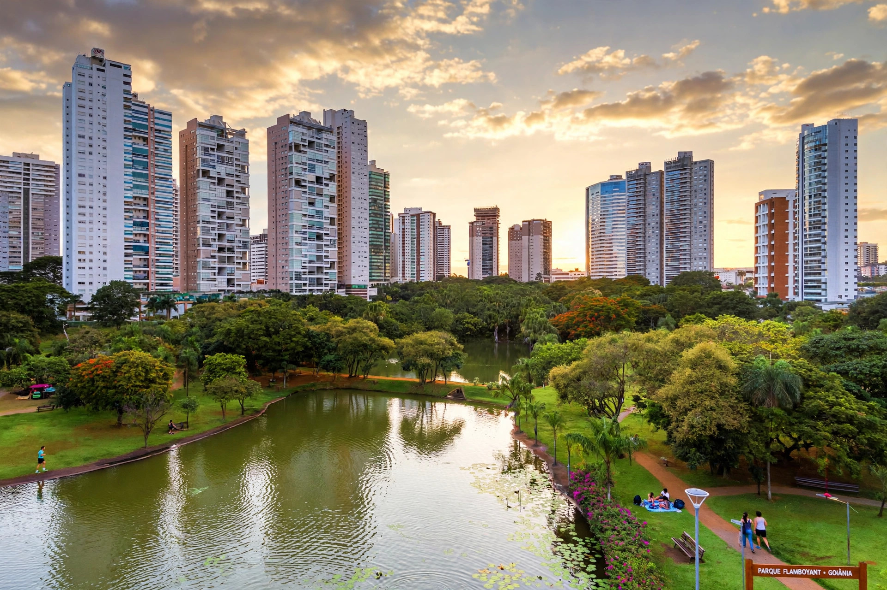

Goiânia
Goiânia is the capital and largest city of the Brazilian state of Goiás. A planned city founded in the 1930s, it is noted for its Art Deco architecture, extensive green areas and parks, and a strong country-music (sertanejo) culture. It is also known internationally for the 1987 radiological accident involving a caesium-137 source.
| Country | Brazil |
|---|---|
| State | Goiás |
| Founded | 24 October 1933 |
| Population | about 1.5 million (city) |
| Elevation | about 750 m |

History
Goiânia was created under state governor Pedro Ludovico Teixeira to replace the old capital, Goiás (Goiás Velho), as part of Brazil's westward expansion. The foundation stone was laid in 1933 and the city became capital in 1937; its original plan was designed by Attílio Correia Lima with Art Deco public buildings.
Goiânia accident
In September 1987, scavengers removed a caesium-137 source from an abandoned radiotherapy clinic and opened it, contaminating hundreds of people; four died. It remains one of the world's most serious radiological accidents outside nuclear facilities.
Geography and economy
The city sits on the central plateau, with a tropical savanna climate. Industry includes food processing, pharmaceuticals and clothing, alongside services and commerce for a rich agricultural hinterland.